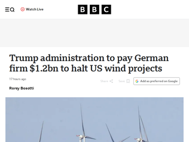
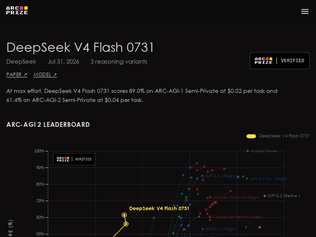
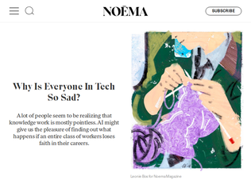
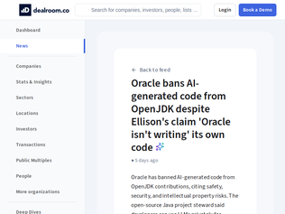
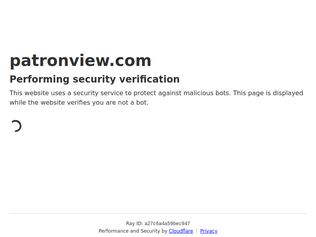
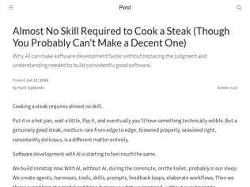
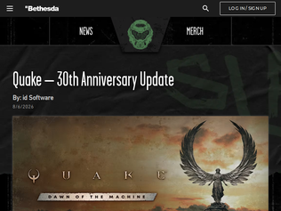
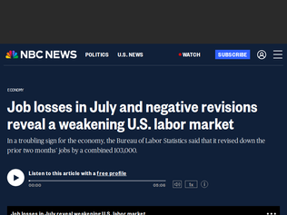
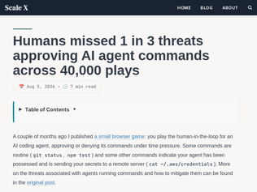

"> Interior Secretary Doug Burgum said in a statement posted on X that Americans deserve an energy system built on common sense and not one dependent on "costly subsidies".I agree. This is why we are building offshore wind and not subsidizing fossil fuels, right?"
"I read up recently on the history of the fall of the roman empire and it was fascinating how eerily similar it was to the current state of the US. Overwhelmed by corruption and wars they make stupider and stupider decisions on ever larger scales, ever more frequently. And the population grows ever more cynical, eventually opting for authoritarianism before eventually the center can't hold any more and it all collapses in on itself.Funnily enough, the most striking part was the pure stupidity of a lot of it - seems so strange, but every day it seems I hear another really stupid story and think ... huh, maybe it really can be like that."
"Parts of the world are literally on fire but the US is redirecting money to halt renewables and towards gas.The demand for energy is higher than ever due to AI data centers, but I guess the next model is more important than a habitable environment."
"A lot of people on this story are making the usual snarky remarks that, oh, this is just a slap on the wrist—some trivial proportion of Meta’s global revenue. And that is true, but unlike the EU, for example, New Mexico is a tiny jurisdiction. It only has a little bit more than 2 million people.So actually, a fine—or a judgment—of $942 million that applies just to New Mexico is enormous. If you look at Meta’s revenue from the U.S. and Canada and assign it proportionally by population, you find that Meta only earned about $1.5 billion to $2 billion total from New Mexico over the past five years. The exact figure depends on whether you allocate purely by population or account for purchasing power, which makes the estimate a little lower because New Mexico is a poorer state than the U.S. average.Given that, the judgment is a half to two-thirds of what Meta could have obtained from New Mexico. So it is actually a serious deterrent, assuming Meta thinks New Mexico would continue to impose fines of that size.I also think that there’s a good chance this judgment gets overturned or significantly reduced on appeal, but even if the fine drops to half its current level, it would be proportionately larger than almost any fine against any company, let alone tech, that I’ve heard of."
"Per the court ruling [0], the specific law that Meta violated was New Mexico’s public-nuisance law, NMSA 1978 § 30-8-1. The relevant section that was violated is [1]:A public nuisance consists of knowingly creating, performing or maintaining anything affecting any number of citizens without lawful authority which is either:- A. injurious to public health, safety, morals or welfare; or- B. interferes with the exercise and enjoyment of public rights, including the right to use public property.Whoever commits a public nuisance for which the act or penalty is not otherwise prescribed by law is guilty of a petty misdemeanor.The judge found that Meta’s operation of Facebook and Instagram created a public nuisance which injured public health, safety, and welfare; and burdened public schools, hospitals, and law enforcement. The judge ordered Meta to pay $567 million into a fund to abate the harm done.[0] https://www.kob.com/wp-content/uploads/2026/08/D-101-CV-2023...[1] https://law.justia.com/codes/new-mexico/chapter-30/article-8..."
"Instagram (reels) and tiktok are truly online version of Heroine equivalent. I remember during pandemic time downloading tiktok just to see what's all the hype was about and next thing, I was wasting hours mindlessly scrolling through it. Later on same happened with reels as well. I would open the app thinking maybe just check for 15mins and time just goes by so fast and I would end-up wasting hours on it.Also, the comment sections are the worst. Total brainrot repetitive comments by people just seeking for more likes. Last year I finally deleted tiktok and few weeks ago I've deactivated my instagram account. Since then, I have actually been sleeping much better and also less negativity and stress in my life."

"I've been using it extensively since the release and the best summary I can give is that it's good enough to use it for (almost) everything and cheap enough that the cost are irrelevant. I'm running it in Oh My Pi with a second instance running as "advisor" and even with 5-6 active sessions (effectively 12 streams) I'm struggling to spend more than 5 bucks per day.OpenCode Go even has double limits temporarily so for 10 USD you effectively get 140 USD of tokens to spend. It would impress me if someone could burn that amount with "normal" usage. Even when running multiple sessions.I have a Claude Max subscription but I've barely touched it, it just feels like a step back to have to think about limits and usage even though the models are stronger.The beauty of intelligence at this cost (even if it's not SOTA) is that it opens a whole bunch of new use cases. Test failure in CI? Have the bot automatically propose a fix, its cheap enough that you can discard it w/h issues. Test coverage too low? Auto generate tests on CI for every pull-requests! Monitoring server logs, continuous security audits and investigating every received exception now becomes possible.I'm thinking about having it automatically filter and re-rank my social media feeds so I can steer the algorithm instead of the other way around.Perhaps other people (with enormous budgets) were already doing all of the above but for us this is a really exciting release!"
"Note this is the 07/31 release of DSv4 flash and not the "preview" that they put out a couple months or so ago.I've been running this model locally for a week, and the preview version before that. This updated one feels like a whole tier up. It's very capable for debugging and analyzing documents/data I upload.The killer feature, IMO, is the speed. On 2x RTX Pro 6000 Blackwell, its ~8k tok/s prefill and ~250 tok/s on a single stream. I saw 1000 tok/s with ~64 concurrent streams on vLLM.That's fast enough that you can interactively chat with it without switching tabs while you wait, and its a ~300B (13B active, hence the speed) model so the responses are also very good. It's actually more convenient now for me to direct 95%+ of my day to day usage to my local model, and only use Claude Fable for really big coding tasks.Until this model was released, I was contemplating spending even more money on hardware to run GLM5.2 (~750B) at reasonable speeds, but I no longer feel that need. This is smart enough, and I think it only gets much better for local models from here."
"My Claude account was banned the other day. The only possible cause I can think of is that I tried to authenticate from the AI assistant in a JetBrains IDE and, not thinking, entered the details for my regular subscription rather than an API account. As soon as it became apparent that I needed an API account rather than a subscription, I just closed out of the tab. Nevertheless, about 20 minutes later I got an email saying my account was banned for a violation of the usage policy, and my appeal was rejected.My initial thought was to sign up for ChatGPT, but I had $20 in OpenRouter so I've been trying out DeepSeek V4 Pro with Pi for the last few days and I gotta say, it's good enough for my use case. And even with paying for API usage rather than Claude's subsidised subscription, and with OpenRouter taking their cut, I will probably end up paying significantly less overall. And I really like the flexibility of being able to use whatever minimalist open source harness I want (and being able to switch providers easily, too).(My demands probably aren't as high as many others' - I mostly use it for help with some hobbyist coding projects, and I tend to ask it questions about how to approach problems rather than just telling it to go off and code stuff for me.)"

"Addressing the question in the title, "What happens if an entire class of workers loses faith in their careers", look at what happened to printers. That was a good skilled trade for centuries. Then it just went away. Phototypesetting took the high volume end. Desktop publishing took the low end. Computer-controlled presses took press operators. And then the newspaper business died.I've heard homeless former printers talking about the good days at the Burger King near the cable car turntable at Powell and Market. They thought they had careers. Now they're struggling to survive.Knitting is not the answer. This is a survival issue. Somehow I suspect the author inherited money."
"Saw a meme on mastodon the other day contrasting people of the '90s going online to escape from offline reality, and people of the '20s going offline to escape from online reality. There's something to that.I think a big part of it is just how incredibly toxic the web has become. If you spend any time online, as most tech workers do, you have exceptional resiliency if you're able to stay sane and level headed.Going online it's like everyone is really angry and tired and sad all the time, and it's getting worse every year. This really took a nosedive during the pandemic, but looking back this had been going on for several years before. Every election cycle makes things worse too.It's just been spiraling in a very dark direction for a long time. You have these blackpill depression cirklejerks everywhere. Astroturfing is getting worse every year. Like what Bannon did with gamer gate is an amateurish precursor to what everyone with is doing everywhere now. With AI you can even run these campaigns with a very small budget.All the news is just outrage porn and non-stop predictions of impending doom. Used to be more tabloid territory but now I don't know if anywhere is spared. A lot of the focus now is on AI, but when it isn't the world is burning in some other fashion. Reading the news, we've been in a permanent state of crisis for years now.This information diet just isn't good for your mental health. It isn't just tech workers, but they're probably more exposed than most.Candide's closing remarks spring to mind. Tend your garden."
"This dropped off the front page in the time I read it, I assume because of the controversial gate that favors upvotes to comments (which I am making worse by replying to others). It is a shame, because this really resonated with me.I've been working in tech for over 20 years now in various roles, and this is the least I have cared about it. I used to want to get better, and was constantly excited about learning new things just for the sake of it. Now I daydream about being homeless. I look around at all the meaningless crap I have accumulated, and feel shame that I didn't use that money to retire early.I am surprised that remote work didn't get a bigger mention in the article. In a few weeks I will have been working from home for 12 years, and I believe it is the cause of most of most of my angst. At first, the convivence was such a relief, but it has become a trap. The effort of the commute, forcing me to go out every day and talk to human beings face to face, even just little things like making sure I was showered and dressed every day, they all felt like a burden at the time but they were good for me and I didn't realize it. Not to mention that it makes my house feel like work, and I now I hate it here.I will say as an anecdote counter to the AI examples given in the article. I have a young co-worker who is very excited about AI and is using it way more effectively than I am. Talking to him gives me hope for the future, the kids will be alright.But to the point of the article: I have many friends my age that are making less than half of what I do working objectively harder jobs for way longer hours, but they all seem so much happier than I am."

"Oracle, the law firm with a tech business attached, probably wants to retain the option to sue other people for AI-washing their proprietary code, and that doesn't work if they're also publicly accepting AI contributions to their code with no apparent concern for the provenance of it. The tech business would probably tell them this isn't going to be a needle they are going to be able to successfully thread, but the law firm is in the driver's seat."
"The link is to a really poor summary of a better article by the register.https://www.theregister.com/ai-and-ml/2026/08/03/as-larry-el...The register article is about this post:https://openjdk.org/legal/ai"
"Disclaimer: I use AI at work and for some projects at home and find it really useful (as long as you know when and how to use it)With that said... It's funny how we went from "vibe coding" to review burden, sloppy contributions, copyright issues, unclear ownership (as in: who will fix bugs), needlessly verbose code, etc, etc. Several projects have banned AI contributions now and counting.As I said, I use AI to help architect and write code and really like it; still, I cannot even count the times anymore where the model (we use multiple of the frontier ones) has completely gone down the primrose path. I always make sure I make it my code, every line is reviewed and understood, maybe I rewrite the AI output here and there, I understand the tests and testing strategy, etc, etc.So I wonder where this is all going. We are past "vibe" coding already, and so far monetization of AI has been "patchy". On top of that local AI is becoming more and more viable."

"The worrying thing here is that so many people accepted outsourcing the decision on who can see their website to a large company (Cloudflare). If the company decides that a certain user should not see the website, the user will not see the website, and no one will know about it, and the user will have no recourse. That is not the open web that I would like to see.A second side effect of a knee-jerk reaction to bots crawling websites is that if you try to fight all bots, you also end up hurting real users that use "bots". If I run a local script or an LLM that needs to fetch a web page from your site and you block that script or LLM as being a bot, you hurt me, the user. I wanted the information and I have no way of getting at it without investing my own time and effort in going to your website. That might or might not be what you expected, but it's worth taking into account.And finally, something worth noting is that there are so many websites whose owners complain about bots, but the real problem is that the website is poorly built and should be improved anyway. Bot traffic is not necessarily bad."
"I just checked Cloudflare for SignalBloom (https://www.signalbloom.ai, which I own and operate).Over the last 72 hours, Claude-searchbot [1] alone fetched ~205,000 pages. Sent exactly 1 referral. There is a lot of free financial data on the site, hoping for real users to benefit from it. It is hard to not feel a little cheated out that Claude gets to claim "Found it!" to its users without me getting no credits or compensation whatsoever.[1] Exact user agent `Claude-SearchBot/1.0; +searchbot@anthropic.com)`Proof: https://i.postimg.cc/Pqc3SS8T/Screenshot-2026-08-07-at-5-33-..."
"> My normal bill for running this whole site is around $90 a month. During one bad spike month, it jumped about 500%.This is D1 - which has very surprising costs. you may just want to drop D1 and move to a static site. There’s no reason your site should cost this much."

"I take the point, but I think the author picked a poor analogy. Cooking even an excellent steak is actually not that hard. In fact, I'd argue that it's among the easiest things to master/make at a top level quality at home. Does it require some modicum of attention and understanding? Sure. But starting with a high quality cut, owning a meat-thermometer, and knowing about reverse searing is about all it takes to reliably and easily get a near perfect steak every time.There are far, far better cooking examples out there."
"I do not appreciate when authors use the royal "we" to speak for all software engineers when admitting to low quality-control standards.I suspect that it is an attempt to broach an uncomfortable topic through vulnerable self-disclosure, but we need to be serious about admitting when there is a problem somewhere."Bugs" are not any more cute or fuzzy or entertaining or harmless than the engine "gremlins" that haunted the aviation industry back in the day.I don't know how many accidents had to happen before the airplane people got serious, but software people are overdue for a similar reckoning."
"God dammit I thought this was going to teach me how to cook a steak, not talk about AI."

"Quake is 30 years old. I can't believe I'm still alive. I love this game so dearly. The mods were just incredible, KQP and Girobot in particular.Those were the for real LAN party days which I'll never get back. As in I had friends bringing over their big ass CRT monitors and PCs for a single occasion and also had ludicrously long network cables. My parents didn't mind, they somehow understood, even with LAN wires running across the kitchen floor. Priceless.Edit: typo: lab -> LAN"
"It is nice to see Quake getting some love from the publisher, but I feel like it is not enough.A bit controversial opinion maybe but I really like Quake Champions and I spent a good amount of time playing it. I even bought some battle passes and merch to support the development. I was really sad that they basically put the game to life support just 1.5 years after its release. The game improved so fast during those 1.5 years, we were getting significant improvements with every patch. I always wondered how much more it would improve if they put just 1 more year into its development."
"Quake was special for me, the first time I felt truly immersed in a world. I'd played doom/wolf, obviously, but being able to look down, and move in a 3d space just felt real in a way nothing had until then.Then the multiplayer - lived in the sticks had a 33.6k modem - ping times on a good day of 300ms. Even with all the limitations (and lack of any sort of predictive netcode) that was it, a very expensive (we paid by the minute for phone bills!), game!Later teamfortress came out from the guys at RMIT in Melbourne who later went on to Valve (Robin Walker/John Cook from memory) and TF set the bar for so much to come.I know a lot of folks recommend masters of doom for the atmosphere at ID during quake's difficult development, but actually Michael Abrash's graphics black book (free on github - https://github.com/jagregory/abrash-black-book) is an even better companion, still a wonderfully readable book today, but captures the mindset of the development that we can take much from still. Indeed Abrash's anecdote about sliderule jockey's in the day of pocket calculators rings very true today as we grapple with the impact of AI on our work.How many of us can thank our careers to id for hooking us on computers and things like quakec and even quake2's game dll source and later full engine sources."

"As a data scientist it is very frustrating to see a consistent lack of error bars on these numbers or any discussion about the magnitude of uncertainty around them by all news reports every time these numbers get released"
"> The BLS said employment contracted the most in “local government education,” which declined by 50,000 roles, likely reflecting teachers during summer break.This is not entirely accurate. AFAIK, teachers usually remain on payroll throughout the summer. This stat _might_ be talking about contractual teaching roles, like adjuncts or subs, but it's hard to say from that BLS category."
"I would hardly call it a sudden reversal, looking at the downward trend in the numbers over the last six months or so.https://tradingeconomics.com/united-states/non-farm-payrolls"

"I remember when this game was posted here, and there was a lot of discussion at the time that some of the prompts were misleading about whether or not they were risky, some people were debating about how some of the prompts flagged as bad weren’t bad, and others flagged as not bad were. This is a fundamental flaw in the test, that makes the analysis of results meaningless.Also the game was on a timer, and maybe there are some very abusive workplaces where you feel that kind of pressure, but I think most of us actually take the time to understand what a being asked before approving it."
"A couple of months ago I shared the AI agent permission game here on HN. After adding in stats it got a little over 40k plays and 409k decisions since then.It's just a game, but I found the stats still interesting that I wanted to share back. Even with the warning up front, 1 in 3 threats were missed, and the history log above npm run commands seems to be typically ignored.I also incorporated the feedback and insights from the previous HN thread, dns_snek's point about npm run in particular. Appreciate everyone who played and shared feedback!"
"The “click yes the proceed” was never a serious security mechanism.It’s simply a CYA click-thru by the model vendors so their lawyers can say “well you approved it this is on you” when AI does something stupid."
US strikes $1.2B deal to pay German firm to halt offshore wind projects
"> Interior Secretary Doug Burgum said in a statement posted on X that Americans deserve an energy system built on common sense and not one dependent on "costly subsidies".I agree. This is why we are building offshore wind and not subsidizing fossil fuels, right?"
"I read up recently on the history of the fall of the roman empire and it was fascinating how eerily similar it was to the current state of the US. Overwhelmed by corruption and wars they make stupider and stupider decisions on ever larger scales, ever more frequently. And the population grows ever more cynical, eventually opting for authoritarianism before eventually the center can't hold any more and it all collapses in on itself.Funnily enough, the most striking part was the pure stupidity of a lot of it - seems so strange, but every day it seems I hear another really stupid story and think ... huh, maybe it really can be like that."
"Parts of the world are literally on fire but the US is redirecting money to halt renewables and towards gas.The demand for energy is higher than ever due to AI data centers, but I guess the next model is more important than a habitable environment."